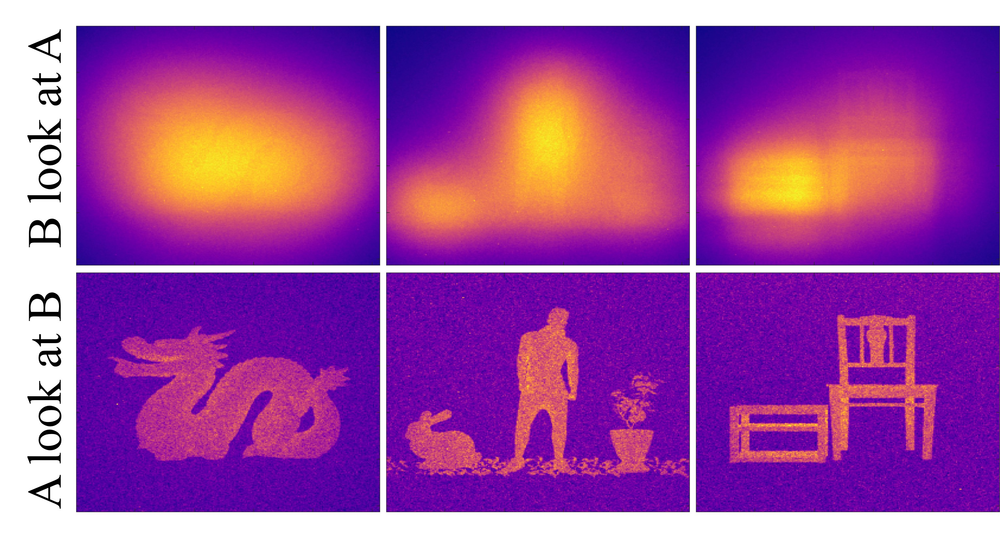

Selected Publications
(* indicates equal contribution)

SCREEN: SCatteREr ENabled optical asymmetry
Yongyi Zhao*, Sean M. Farrell*, Christian R. Jacobson, AJ Yates, Andrew McClung, Urcan Guler, Naomi J. Halas, Peter Nordlander, and Ashok Veeraraghavan
Optica, [Paper]
Yongyi Zhao*, Sean M. Farrell*, Christian R. Jacobson, AJ Yates, Andrew McClung, Urcan Guler, Naomi J. Halas, Peter Nordlander, and Ashok Veeraraghavan
Optica, [Paper]

Unrolled-DOT: an Interpretable Deep Network for Diffuse Optical Tomography
Yongyi Zhao, Ankit Raghuram, Fay Wang, Stephen Hyunkeol Kim, Andreas Hielscher, Jacob Robinson, and Ashok Veeraraghavan
Journal of Biomedical Optics, [Code] [Paper] [Data]
Yongyi Zhao, Ankit Raghuram, Fay Wang, Stephen Hyunkeol Kim, Andreas Hielscher, Jacob Robinson, and Ashok Veeraraghavan
Journal of Biomedical Optics, [Code] [Paper] [Data]

High Resolution, Deep Imaging Using Confocal Time-of-Flight Diffuse Optical Tomography
Yongyi Zhao*, Ankit Raghuram*, Stephen Hyunkeol Kim, Andreas Hielscher, Jacob Robinson, and Ashok Veeraraghavan
IEEE Transactions on Pattern Analysis and Machine Intelligence (PAMI), [Code] [Paper]
Yongyi Zhao*, Ankit Raghuram*, Stephen Hyunkeol Kim, Andreas Hielscher, Jacob Robinson, and Ashok Veeraraghavan
IEEE Transactions on Pattern Analysis and Machine Intelligence (PAMI), [Code] [Paper]

PANDORA: Polarization-Aided Neural Decomposition Of Radiance
Akshat Dave, Yongyi Zhao, and Ashok Veeraraghavan
ECCV 2022, [Project Page] [Code] [Paper] [Data]
Akshat Dave, Yongyi Zhao, and Ashok Veeraraghavan
ECCV 2022, [Project Page] [Code] [Paper] [Data]
Noninvasive monitoring of fetal tissue oxygenation level using time-domain NIRS
Zijing Guo, Yongyi Zhao, Yiyi Yang, Ankit Raghuram, Martin Debreczeny, Neil Ray, Jacob Robinson, and Ashok Veeraraghavan
Journal of Biomedical Optics, [Paper]
Zijing Guo, Yongyi Zhao, Yiyi Yang, Ankit Raghuram, Martin Debreczeny, Neil Ray, Jacob Robinson, and Ashok Veeraraghavan
Journal of Biomedical Optics, [Paper]
High spatial resolution diffuse optical tomography with directional information
Zijing Guo, Yiyi Yang, Yongyi Zhao, Jacob Robinson, and Ashok Veeraraghavan
Optics Letters, [Paper]
Zijing Guo, Yiyi Yang, Yongyi Zhao, Jacob Robinson, and Ashok Veeraraghavan
Optics Letters, [Paper]

Ultrafast and Ultrahigh-Resolution Diffuse Optical Tomography for Brain Imaging with Sensitivity Equation based Noniterative Sparse Optical Reconstruction (SENSOR)
Stephen Hyunkeol Kim, Yongyi Zhao, Ankit Raghuram, Ashok Veeraraghavan, Jacob Robinson, and Andreas Hielscher
Journal of Quantitative Spectroscopy and Radiative Transfer, [Paper]
Stephen Hyunkeol Kim, Yongyi Zhao, Ankit Raghuram, Ashok Veeraraghavan, Jacob Robinson, and Andreas Hielscher
Journal of Quantitative Spectroscopy and Radiative Transfer, [Paper]

Angle Sensitive Pixels for Lensless Imaging on Spherical Sensors
Yi Hua, Yongyi Zhao, and Aswin Sankaranarayanan,
[Paper]
Yi Hua, Yongyi Zhao, and Aswin Sankaranarayanan,
[Paper]
Additional Publications
Yongyi Zhao,
Ankit Raghuram,
Ashok Veeraraghavan, and
Jacob Robinson.
GDOT: Gated Diffuse Optical Tomography.
U.S. Patent 12,507,895 B2. 2023.
[Patent]
Ankit Raghuram, Yongyi Zhao, Akash Maity, and Ashok Veeraraghavan. "Measuring Physiological Parameters Under the Skin Using Visible/NIR Light" in Encyclopedia of Sensors and Biosensors, Volume 4 pp 133-142. 2023. [Book Chapter]
Ankit Raghuram, Yongyi Zhao, Akash Maity, and Ashok Veeraraghavan. "Measuring Physiological Parameters Under the Skin Using Visible/NIR Light" in Encyclopedia of Sensors and Biosensors, Volume 4 pp 133-142. 2023. [Book Chapter]